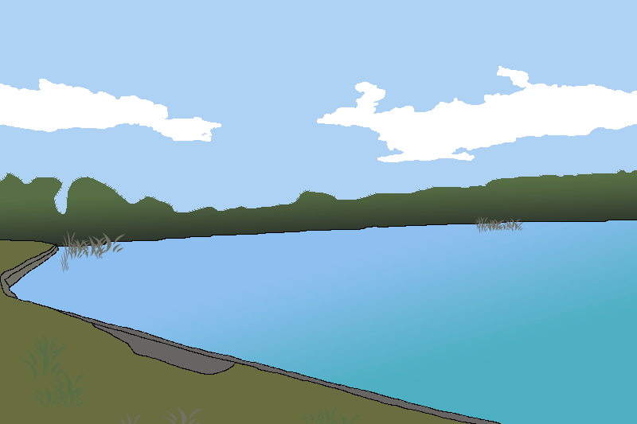

Станіславчик
Риболовне місце знаходиться в селі Станіславчик і називається річка Мурафа. Довжина річки 163 км, площа басейну 2 410 км². Похил річки 1,6 м/км. Долина у верхній течії V-подібна, з крутими, розчленованими схилами. Глибина долини у пониззі до 80—120 м, ширина 1—1,5 км. Заплава двобічна, у верхній течії заболочена, на окремих ділянках майже відсутня; її ширина у верхів'ях 50—120 м, у середній та нижній течії — 200—600 м. Річище у верхній течії слабозвивисте, замулене, нижче — кам'янисте, є пороги. Ширина річки 15—20 м (найбільша — 58 м).
Мурафа тече Подільською височиною спершу на південний схід (місцями на схід), далі поступово повертає на південь і південний захід. У пониззі знову тече на південь та південний схід. Впадає до Дністра на південний захід від міста Ямполя.
Способи ловлі
На водоймі дозволена ловля з берегу та з човна.
Риба
В водоймі водиться така риба: Карась, Плітка, Окунь, Короп, Краснопірка.
Дозволені снасті
Дозволено використовувати будь-які снасті, окрім тих, що вважаються браконьєрськими (електровудочки, вибухові речовини, сітки).
Глибина
На порожистих ділянках 0,1—0,5 м, на плесах — 1,5—3,5 м.
Обмеження на вилов риби
Обмеження на вилов риби відсутні.